3. Grafický režim¶
Doteraz sme pracovali len v textovom režime: do textovej plochy (shell) sme z programu zapisovali len pomocou print(). V súčasných operačných systémoch (windows, linux, os, …) sú prakticky všetky aplikácie grafické. Preto to skúsime aj my.
Budeme pracovať s modulom tkinter, ktorý slúži na vytváranie grafických aplikácii. My ho budeme využívať hlavne na kreslenie na tzv. plátno, hoci tento modul zvláda aj iné typy grafických prvkov. Príkladom grafickej aplikácie je aj vývojové prostredie IDLE. Toto prostredie je kompletne napísané v Pythone a používa práve tkinter.
Užitočné informácie k tkinter nájdete napríklad v materiáli:
Základná grafická aplikácia
Minimálna grafická aplikácia je táto:
import tkinter
canvas = tkinter.Canvas()
canvas.pack()
# tu budú príkazy na kreslenie do grafickej plochy
tkinter.mainloop()
Postupne vysvetlime tieto príkazy:
import tkinter- vytvorí premennútkinter, pomocou ktorej budeme mať prístup (bodkovou notáciou) k funkciám v tomto modulecanvas = tkinter.Canvas()- vytvorí plátno grafickej aplikácie - priradili sme ho do premennejcanvas(mohli sme ho pomenovať aj hocijako inak, ale takto budeme lepšie rozumieť aj cudzím programom, keďže najčastejšie sa používa práve takýto zápis)týmto automaticky vznikne aj malá grafická aplikácia (malé okno), ale aj plátno, ktoré ale zatiaľ nie je vidieť, keďže sme ho do tohto nového okna ešte nikam neumiestňovali
canvas.pack()- až teraz sa umiestni naše plátno do grafickej aplikácie (do okna) - plátno je teraz pripravené tak, aby sme do neho mohli kresliťtkinter.mainloop()- vďaka tomuto príkazu grafická aplikácia v operačnom systéme naozaj žije, t.j. reaguje na klikanie, presúvanie, zmenu veľkosti, prekresľovanie, …
Posledný príkaz tkinter.mainloop() môžeme pri spustení pod IDLE vynechať, lebo práve IDLE ho spraví za nás (celý IDLE je naprogramovaný v Pythone, využíva tkinter a spúšťa na pozadí mainloop).
Po spustení tohto programu dostávame malú grafickú aplikáciu:
{kind=link}
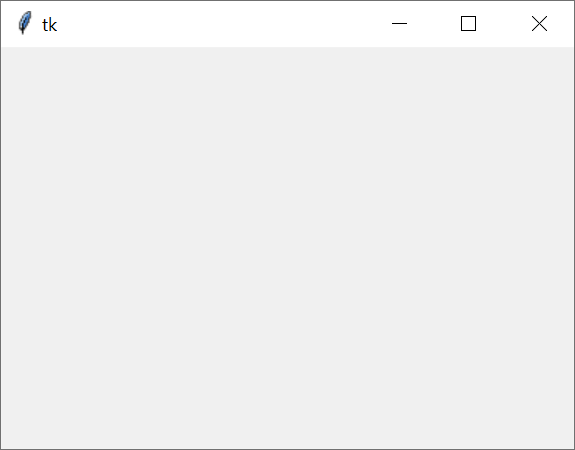
V tejto aplikácii sa nachádza plátno (šedá plocha vo vnútri okna), ktoré je zatiaľ prázdne, lebo sme ešte nezadali žiaden ďalší grafický príkaz na kreslenie.
Grafické príkazy¶
Všetky grafické príkazy budú pracovať s plátnom a preto budú začínať slovom canvas, za ktorým (za bodkou) bude samotný príkaz. Tvar väčšiny príkazov bude
canvas.create_<meno útvaru>(x, y, ..., <ďalšie parametre>)
Bude to znamenať, že do grafickej plochy canvas sa nakreslí uvedený útvar, jeho poloha súvisí so súradnicami (x, y) a niekedy budeme okrem ďalších súradníc špecifikovať aj nejaké parametre. Postupne sa zoznámime s týmito grafickými objektmi:
canvas.create_text(...) # vypíše zadaný text
canvas.create_rectangle(...) # nakreslí obdĺžnik
canvas.create_oval(...) # nakreslí elipsu
canvas.create_line(...) # nakreslí lomenú čiaru
canvas.create_polygon(...) # nakreslí polygón
canvas.create_image(...) # nakreslí png obrázok
Text v grafickej ploche
Ukážme najjednoduchší grafický príkaz, ktorý do plochy (plátna) zapíše nejaký text. Do našej šablóny na vytvorenie grafickej aplikácie pridáme jeden príkaz na „nakreslenie“ (vypísanie) nejakého textu:
import tkinter
canvas = tkinter.Canvas()
canvas.pack()
canvas.create_text(150, 100, text='programujem v Pythone')
#tkinter.mainloop()
Všimnite si, že sme tu vynechali posledný príkaz tkinter.mainloop(). Predpokladáme, že program spúšťate pod IDLE. Inak by ste tento príkaz nemali na konci programu zabudnúť.
Po spustení dostávame takýto grafický výstup:
{kind=link}
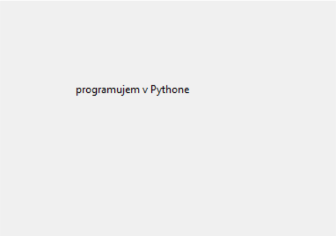
V šedej ploche sa na súradniciach (150, 100) vypísal zadaný text ale dosť malými písmenkami. Potrebujeme ale rozumieť, ako tkinter chápe súradnicovú sústavu.
Súradnicová sústava
Zo školskej matematiky vieme, že súradnicové osi x a y sú na seba kolmé a pretínajú sa v bode (0, 0). Orientácia týchto osí je takáto:
{kind=link}
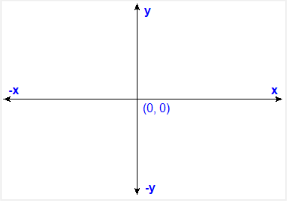
V počítačových programoch sa veľmi často bod (0, 0) presúva do ľavého horného rohu plátna, x-ová os prechádza zľava doprava po hornej hrane plátna a y-ová os prechádza zhora nadol po ľavej hrane plátna:
{kind=link}
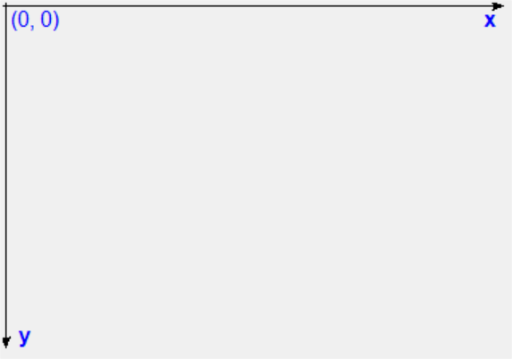
Aj takáto súradnicová sústava má záporné x a y ale, keď budeme kresliť mimo viditeľnú časť plátna, niektoré časti kresby nebudeme vidieť. Zatiaľ budeme pracovať s plátnom, ktoré má rozmery približne 380 x 260. Neskôr sa naučíme nastavovať ľubovoľné rozmery plátna.
Napíšme teraz funkciu, ktorá do grafickej plochy na náhodnú pozíciu napíše text 'PYTHON':
def kresli_text(text):
x = random.randint(50, 330)
y = random.randint(20, 240)
canvas.create_text(x, y, text=text)
kresli_text('PYTHON')
Všimnite si, že pri volaní funkcie create_text() do jej formálneho parametra text vloží hodnotu lokálnej premennej text. To sú dve rôzne premenné s rovnakým menom.
Aby sme túto funkciu mohli naozaj zavolať, musí už exitovať randint (zrejme z modulu random) aj canvas (vznikne pomocou modulu tkinter), teda
import tkinter
import random
def kresli_text(text):
x = random.randint(50, 330)
y = random.randint(20, 240)
canvas.create_text(x, y, text=text)
canvas = tkinter.Canvas()
canvas.pack()
for i in range(10):
kresli_text('PYTHON')
tkinter.mainloop()
V tejto malej ukážke vidíme:
v tele funkcie môžeme používať premenné, ktoré sú definované mimo tela funkcie (
random.randintacanvas) - hovoríme im globálne premennév tele funkcie sme do dvoch premenných
xaypriradili nejaké hodnoty a ďalej sme ich používali v ďalšom príkaze funkcie - hovoríme im lokálne premenné
{kind=link}
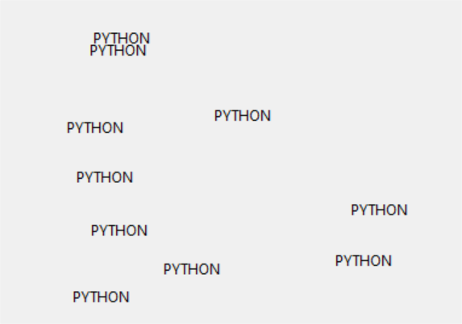
Stačí namiesto výpisu 'PYTHON' vypisovať premennú cyklu:
import tkinter
import random
def vypis_cislo(i):
x = random.randint(50, 330)
y = random.randint(20, 240)
canvas.create_text(x, y, text=i)
canvas = tkinter.Canvas()
canvas.pack()
for i in range(50):
vypis_cislo(i)
tkinter.mainloop()
dostávame takýchto 50 náhodne vygenerovaných bodov:
{kind=link}
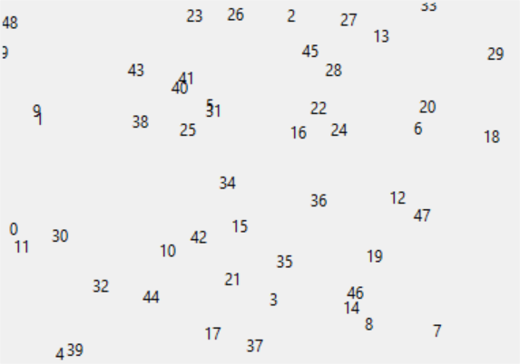
Pri vypisovaní textov pomocou create_text môžeme použiť nielen znakové reťazce a celočíselné premenné, ale napríklad aj takéto dvojice:
import tkinter
import random
canvas = tkinter.Canvas()
canvas.pack()
for i in range(10):
x = random.randint(0, 380)
y = random.randint(0, 260)
canvas.create_text(x, y, text=(x, y))
tkinter.mainloop()
teraz okrem 10 náhodne vygenerovaných bodov sa dozvedáme aj ich súradnice:
{kind=link}
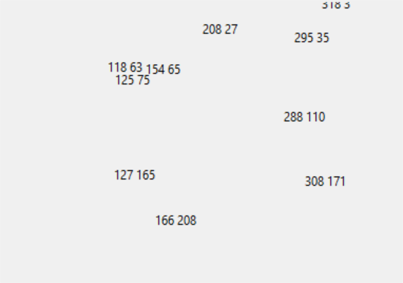
Tu treba poznamenať, že samotné súradnice vypisovaného textu označujú presný stred tohto textu, tak ako to ukazuje nasledovný zväčšený obrázok, v ktorom sa vypísal text 'PYTHON'. Je tu zobrazená poloha (x, y), ktorá sa zadala v príkaze create_text:
{kind=link}
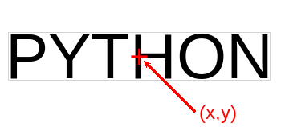
Kreslenie obdĺžnikov
Na nakreslenie obdĺžnikov slúži grafický príkaz:
canvas.create_rectangle(x1, y1, x2, y2)
Keďže takýto obdĺžnik bude mať strany rovnobežné s osami x a y, na jednoznačné zadefinovanie obdĺžnika nám budú stačiť ľubovoľné dva protiľahlé vrcholy. Najčastejšie to bude ľavý horný bod (x1, y1) a pravý dolný (x2, y2). Zapíšme napríklad:
import tkinter
canvas = tkinter.Canvas()
canvas.pack()
canvas.create_rectangle(50, 30, 190, 110)
tkinter.mainloop()
Nakreslí obdĺžnik, ktorého ľavý horný vrchol je (50, 30) a pravý dolný je (190, 110):
{kind=link}
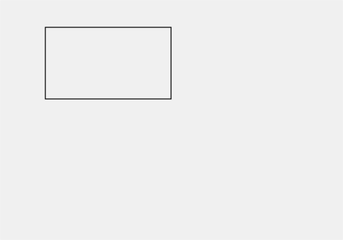
Keďže pri kreslení obdĺžnika môžeme určiť jeho ľubovoľné dva protiľahlé vrcholy, všetky nasledovné volania by nakreslili presne ten istý obdĺžnik, ako sa nakreslil v predchádzajúcom programe:
canvas.create_rectangle(190, 110, 50, 30)
canvas.create_rectangle(50, 110, 190, 30)
canvas.create_rectangle(190, 30, 50, 110)
Uvedomte si, že šírka tohto obdĺžnika (veľkosť vodorovnej strany) je 190 - 50, teda 140 a výška je 110 - 30, teda 80. Ak by sme teraz zapísali:
import tkinter
canvas = tkinter.Canvas()
canvas.pack()
x, y = 50, 30
sirka, vyska = 140, 80
canvas.create_rectangle(x, y, x + sirka, y + vyska)
tkinter.mainloop()
dostaneme opäť ten istý obdĺžnik. Tento zápis má ale ešte jednu výhodu: veľmi jednoducho vieme nakresliť rovnaký obdĺžnik, ale na inom mieste. Stačí zmeniť x, y a obdĺžnik rozmerov 140 x 80 sa nakreslí na novej pozícii. Pomôžeme si podobne ako pri náhodných pozíciách textu aj pri kreslení obdĺžnikov na náhodné pozície pomocou funkcií modulu random. Nakreslíme 10 rovnako veľkých obdĺžnikov na náhodné pozície:
import tkinter
import random
canvas = tkinter.Canvas()
canvas.pack()
for i in range(10):
x = random.randint(10, 240)
y = random.randint(10, 180)
sirka, vyska = 140, 80
canvas.create_rectangle(x, y, x + sirka, y + vyska)
tkinter.mainloop()
Všimnite si, že obdĺžniky majú priesvitné vnútro (výplň) a teda je cez tieto obdĺžniky vidieť:
{kind=link}
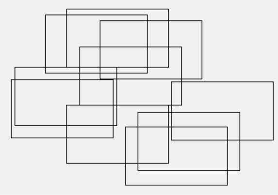
Teraz by sme zvládli zmeniť aj veľkosť obdĺžnikov na nejaké náhodné hodnoty. Preto vo vnútri cyklu vygenerujeme náhodné hodnoty aj pre sirka aj vyska, napríklad takto:
import tkinter
import random
canvas = tkinter.Canvas()
canvas.pack()
for i in range(20):
sirka = random.randint(10, 80)
vyska = random.randint(10, 80)
x = random.randint(10, 370 - sirka)
y = random.randint(10, 260 - vyska)
canvas.create_rectangle(x, y, x + sirka, y + vyska)
tkinter.mainloop()
a môžeme dostať:
{kind=link}
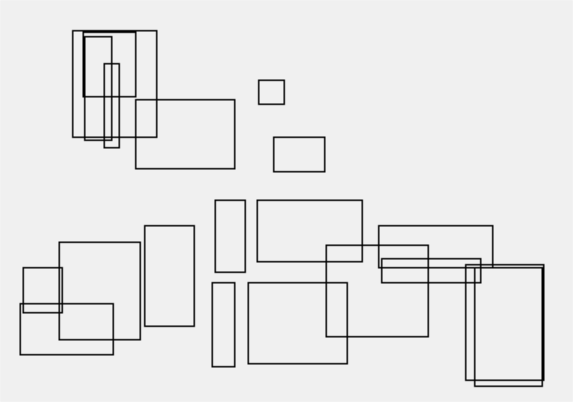
Veľmi často budem pri kreslení grafických útvarov používať aj nejaké farby. Napríklad, tu by sa veľmi hodilo mať zafarbené vnútro týchto obdĺžnikov. Do predchádzajúceho programu urobíme veľmi malú zmenu: do príkazu create_rectangle doplníme jeden parameter, ktorý určí farbu výplne (budeme ho volať pomenovaný parameter). Zmeňme len tento jeden riadok:
canvas.create_rectangle(x, y, x + sirka, y + vyska, fill='red')
20 vyfarbených obdĺžnikov teraz vyzerá takto:
{kind=link}
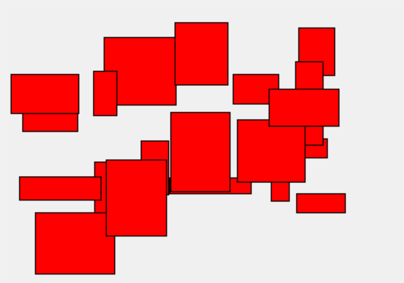
Zrejme teraz každý ďalší nakreslený obdĺžnik môže prekrývať (aj úplne zakryť) niektoré už pred tým nakreslené grafické útvary. Aby sme mohli využívať aj iné farby, mali by sme aspoň čiastočne pochopiť princíp, ako tkinter používa farby.
Farby v grafických programoch¶
V prvom rade modul tkinter akceptuje najbežnejšie mená farieb v angličtine. Tu môžete vidieť malú ukážku týchto mien a+ so zodpovedajúcimi farbami:
{kind=link}
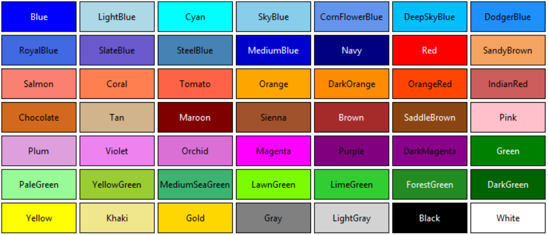
Tieto mená farieb vo veľkej miere zodpovedajú menám v HTML zápisoch a môžete si o tom niečo pozrieť na stránke HTML Color Names.
Ďalší príklad ilustruje použitie dvoch rôznych farieb. Do premenných farba1 a farba2 vložíme mená nejakých dvoch farieb. Potom v cykle použijeme farba1 na vyfarbenie obdĺžnika a nakoniec navzájom vymeníme obsahy týchto dvoch premenných farba1 a farba2. To znamená, že ďalší obdĺžnik sa vyfarbí už druhou farbou:
import tkinter
import random
canvas = tkinter.Canvas()
canvas.pack()
farba1, farba2 = 'tomato', 'gold'
for i in range(20):
sirka = random.randint(10, 80)
vyska = random.randint(10, 80)
x = random.randint(10, 370 - sirka)
y = random.randint(10, 260 - vyska)
canvas.create_rectangle(x, y, x + sirka, y + vyska, fill=farba1)
farba1, farba2 = farba2, farba1
tkinter.mainloop()
Teraz to môže vyzerať takto:
{kind=link}
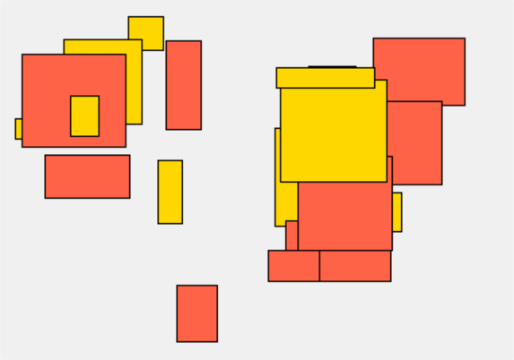
Modul tkinter umožňuje zadávanie farieb aj pomocou tzv. RGB modelu. Každá farba je namiešaná z troch farebných zložiek: red (červená), green (zelená) a blue (modrá). Intenzita každej zložky je určená číslom medzi 0 a 255: hodnota 0 označuje, že príslušná zložka v danej farbe nie je (je vypnutá), hodnota 255 znamená, že sa nachádza v maximálnej intenzite. Čísla medzi tým určujú rôzne odtiene. Ukážme si, akým farbám by zodpovedali niektoré kombinácie RGB. Do troch premenných r, g, b sme priradili tri čísla a do komentára sme zapísali zodpovedajúcu farbu:
r, g, b = 0, 255, 0 # zelená 'green'
r, g, b = 0, 100, 0 # tmavozelená 'dark green'
r, g, b = 255, 255, 0 # žltá 'yellow'
r, g, b = 190, 190, 190 # šedá 'gray'
r, g, b = 0, 0, 128 # tmavomodrá 'navy'
r, g, b = 255, 255, 255 # biela 'white'
r, g, b = 255, 215, 0 # zlatá 'gold'
r, g, b = 255, 165, 0 # oranžová 'orange'
r, g, b = 255, 192, 203 # ružová 'pink'
Takto definované farby sa ale musia zapísať v špeciálnom formáte, ktorý je presne rovnaký ako v HTML. Zapisuje sa ako 7-znakový reťazec v tvare:
'#rrggbb'
pričom rr označuje číslo (od 0 do 255) pre červenú zložku a je zapísané v šestnástkovej (hexadecimálnej) sústave ako dvojciferné číslo, podobne gg a bb vyjadrujú zelenú a červenú zložku, tiež ako dvojciferné šestnástkové čísla. Napríklad, ružovej farbe, ktorá má rgb 255, 192, 203, zodpovedajú šestnástkové zápisy ff, c0, cb a preto ružovú farbu môžeme zapísať ako '#ffc0cb'. Našťastie nám Python pomôže v prevode ľubovoľných čísel do šestnástkovej sústavy. Môžeme otestovať:
>>> r, g, b = 255, 192, 203 # ružová farba
>>> f'#{r:02x}{g:02x}{b:02x}'
'#ffc0cb'
>>> r, g, b = 0, 100, 0 # tmavozelená farba
>>> f'#{r:02x}{g:02x}{b:02x}'
'#006400'
Formát '{r:02x}' označuje, že zapisujeme hodnotu premennej r na šírku 2, 0 označuje, že číslo bude zľava doplnené nulami a špecifikácia x označuje výpis v šestnástkovej sústave.
Použime tieto dve farby na nakreslenie radu obdĺžnikov, ktorým sa striedajú farby výplne:
import tkinter
canvas = tkinter.Canvas()
canvas.pack()
y = 100
farba1, farba2 = '#ffc0cb', '#006400'
for x in range(10, 350, 30):
canvas.create_rectangle(x, y, x + 25, y + 50, fill=farba1)
farba1, farba2 = farba2, farba1
tkinter.mainloop()
po spustení:
{kind=link}
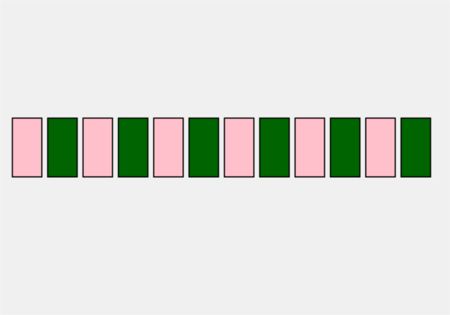
Teraz zapíšme funkciu rgb(), ktorá bude vytvárať farby pomocou RGB-modelu:
def rgb(r, g, b):
return f'#{r:02x}{g:02x}{b:02x}'
otestujme:
>>> rgb(255, 255, 0)
'#ffff00'
>>> rgb(0, 100, 0)
'#006400'
Funkciu rgb() môžeme využiť, napríklad na kreslenie farebných štvorcov:
import tkinter
def rgb(r, g, b):
return f'#{r:02x}{g:02x}{b:02x}'
def stvorec(strana, x, y, farba=''):
canvas.create_rectangle(x, y, x + strana, y + strana, fill=farba)
canvas = tkinter.Canvas()
canvas.pack()
for i in range(10):
stvorec(30, i * 30, 10, rgb(100 + 16 * i, 0, 0))
stvorec(30, i * 30, 50, rgb(100 + 16 * i, 0, 255 - 26 * i))
stvorec(30, i * 30, 90, rgb(26 * i, 26 * i, 26 * i))
stvorec(30, i * 30, 130, rgb(0, 26 * i, 26 * i))
tkinter.mainloop()
Tento program nakreslí takýchto 40 zafarbených štvorcov:
{kind=link}
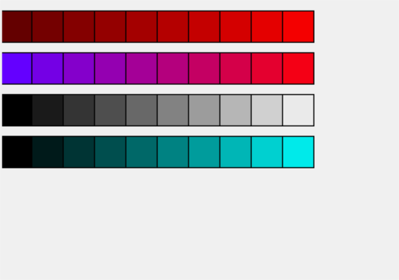
Všimnite si takúto časť programu:
r = random.randint(0, 255) # alebo r = random.randrange(256)
g = random.randint(0, 255)
b = random.randint(0, 255)
farba = f'#{r:02x}{g:02x}{b:02x}'
Najprv sa tu vygenerovali tri náhodné celé čísla z intervalu <0, 255> (čo môžu byť tri zložky RGB) a z nich sa korektne zostavila šestnástková reprezentácia farby. Využime túto ideu a vygenerujme sieť rôznofarebných štvorcov:
import tkinter
import random
def rgb(r, g, b):
return f'#{r:02x}{g:02x}{b:02x}'
def stvorec(strana, x, y, farba=''):
canvas.create_rectangle(x, y, x + strana, y + strana, fill=farba)
canvas = tkinter.Canvas()
canvas.pack()
for y in range(5, 230, 30):
for x in range(5, 350, 30):
r = random.randrange(256)
g = random.randrange(256)
b = random.randrange(256)
stvorec(25, x, y, rgb(r, g, b))
tkinter.mainloop()
Keď tento program spustíte viackrát, zakaždým dostanete iný výsledok, napríklad:
{kind=link}
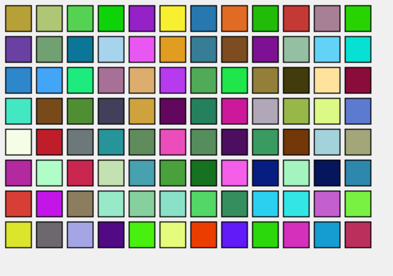
Ak nepotrebujeme generovať tri oddelené zložky RGB, ale stačí nám jedna náhodná hodnota, môžeme použiť úspornejší variant generovania náhodnej farby:
farba = f'#{random.randrange(256**3):06x}'
V tomto prípade sa najprv vygeneruje náhodné číslo z intervalu <0, 16777215> (tretia mocnina 256 mínus 1), toto číslo sa zapíše ako 6-ciferné šestnástkové číslo (3 dvojciferné RGB zložky) do znakového reťazca aj so znakom '#' na začiatku. Môžeme zapísať funkciu bez parametrov:
def nahodna_farba():
return f'#{random.randrange(256**3):06x}'
Otestujeme na príklade, v ktorom nakreslíme vedľa seba 8 zväčšujúcich sa štvorcov (so stranami 10, 20, 30, … 80):
import tkinter
import random
def nahodna_farba():
return f'#{random.randrange(256**3):06x}'
def stvorec(strana, x, y, farba=''):
canvas.create_rectangle(x, y, x + strana, y - strana, fill=farba)
canvas = tkinter.Canvas()
canvas.pack()
x, y = 5, 200
for strana in range(10, 90, 10):
stvorec(strana, x, y, nahodna_farba())
x += strana + 1
tkinter.mainloop()
Každý nakreslený štvorec má inú náhodnú farbu. Všimnite si, že (x, y) je v tomto prípade ľavý dolný vrchol štvorca a jemu protiľahlý (pravý horný) má súradnice (x + strana, y - strana), teda veľkosť strany štvorca je zrejme strana:
{kind=link}
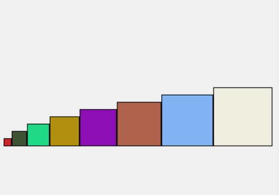
Pozrime si ešte tento príklad, v ktorom nakreslíme n sústredných štvorcov (štvorce majú spoločný stred), v ktorých sa striedajú tri dané farby (napríklad 'red', 'blue', 'yellow'). Veľkosti štvorcov nech sú 10, 20, 30, … Napríklad, pre n = 20 dostaneme:
{kind=link}
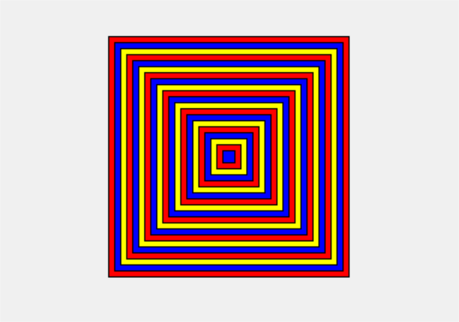
Všetky štvorce majú spoločný stred (napríklad x, y = 190, 130), pričom pre stranu štvorca 2*a dva protiľahlé vrcholy pre create_rectangle môžu byť (x - a, y - a) a (x + a, y + a). Na striedanie troch farieb v cykle môžeme použiť farba1, farba2, farba3 = farba2, farba3, farba1. Ak by sme to zapísali takto:
for a in range(5, 5 * n + 1, 5):
canvas.create_rectangle(x - a, y - a, x + a, y + a, fill=farba1)
farba1, farba2, farba3 = farba2, farba3, farba1
V grafickej ploche by sa objavil len najväčší štvorec, keďže ten by prekryl všetky menšie (keďže sa nakreslil až ako posledný). Preto to petrebujeme kresliť v opačnom poradí, teda od najväčšieho po najmenší. Využijeme funkciu reversed(), ktorá dokáže prevrátiť poradie generovanej postupnosti pomocou range. Zapíšme kompletný program:
import tkinter
canvas = tkinter.Canvas()
canvas.pack()
def sustredne_stvorce(n, farba1='red', farba2='blue', farba3='yellow'):
x, y = 190, 130
for a in reversed(range(5, 5 * n + 1, 5)):
canvas.create_rectangle(x - a, y - a, x + a, y + a, fill=farba1)
farba1, farba2, farba3 = farba2, farba3, farba1
sustredne_stvorce(20)
tkinter.mainloop()
Kreslenie elíps
Keď už vieme kresliť obdĺžniky, potom prechod k elipsám je pre tkinter veľmi jednoduchý: napíšeme program s kreslením obdĺžnikov a potom namiesto create_rectangle zapíšeme create_oval - namiesto obdĺžnika sa presne na tom istom mieste nakreslí (vpísaná) elipsa - vlastne sa „zaoblia“ rohy obdĺžnika. Ukážme to na príklade, v ktorom nakreslíme obdĺžnik a potom na tom istom mieste (s tými istými súradnicami) nakreslíme elipsu:
import tkinter
canvas = tkinter.Canvas()
canvas.pack()
canvas.create_rectangle(80, 50, 300, 200)
canvas.create_oval(80, 50, 300, 200, fill='white')
tkinter.mainloop()
Nakreslenú elipsu sme zafarbili na bielo, aby ju bolo lepšie vidieť:
{kind=link}
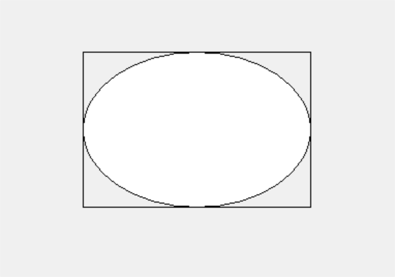
Otestujme kreslenie elíps na programe, v ktorom sme kreslili náhodne veľké obdĺžniky na náhodné pozície. Namiesto create_rectangle zapíšeme create_oval:
import tkinter
import random
canvas = tkinter.Canvas()
canvas.pack()
for i in range(20):
sirka = random.randint(10, 80)
vyska = random.randint(10, 80)
x = random.randint(10, 370 - sirka)
y = random.randint(10, 260 - vyska)
canvas.create_oval(x, y, x + sirka, y + vyska)
tkinter.mainloop()
Program nakreslí 20 rôzne veľkých elíps:
{kind=link}
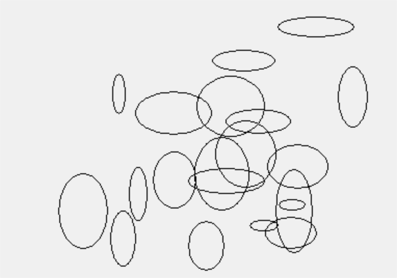
Zrejme ste si uvedomili, že elipsa, ktorá vznikne zo štvorca (má rovnakú šírku a výšku), je vlastne kružnica. Hoci kružnice sa často kreslia tak, že zadáme súradnice stredu (x, y) a polomer r. Potom sa kreslí takto jednoducho:
import tkinter
def kruznica(r, x, y):
canvas.create_oval(x - r, y - r, x + r, y + r)
canvas = tkinter.Canvas()
canvas.pack()
kruznica(80, 150, 100)
canvas.create_text(150, 100, text='+')
tkinter.mainloop()
Na pozíciu stredu sme dokreslili krížik:
{kind=link}
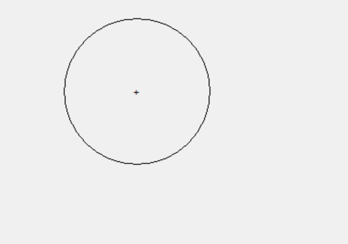
V ďalšom programe na náhodné pozície nakreslíme 100 rôznofarebných kruhov s polomerom r=20:
import tkinter
import random
def nahodna_farba():
return f'#{random.randrange(256**3):06x}'
def kruznica(r, x, y, fill=''):
canvas.create_oval(x - r, y - r, x + r, y + r, fill=fill)
canvas = tkinter.Canvas()
canvas.pack()
for i in range(100):
x = random.randint(20, 350)
y = random.randint(20, 240)
kruznica(20, x, y, nahodna_farba())
tkinter.mainloop()
Všimnite si parameter (lokálnu premennú) fill, do ktorej priradíme náhodnú farbu. Vďaka tomu pri volaní príkazu create_oval zapisujeme fill=fill aby sme do pomenovaného parametra fill priradili hodnotu premennej fill. Po spustení dostaneme:
{kind=link}
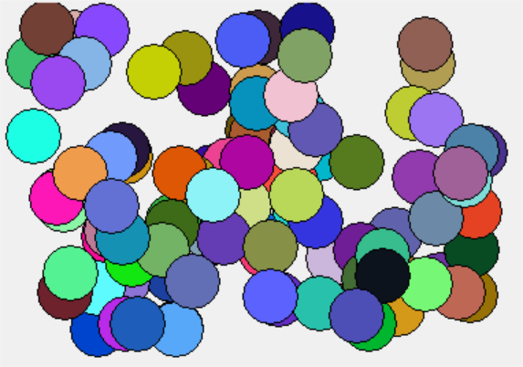
Zadefinujeme funkcie, pomocou ktorých sa nakreslí 5000 náhodných farebných bodiek, ktoré budú zafarbené podľa nejakých pravidiel:
import tkinter
import random
import math
def vzd(x1, y1, x2, y2):
return math.sqrt((x1 - x2) ** 2 + (y1 - y2) ** 2)
def kresli_bodku(x, y, farba):
canvas.create_oval(x - 5, y - 5, x + 5, y + 5, fill=farba, width=0)
def farebne_bodky(pocet):
for i in range(pocet):
x = random.randint(10, 290)
y = random.randint(10, 290)
if vzd(x, y, 150, 150) > 100:
kresli_bodku(x, y, 'navy')
elif vzd(x, y, 230, 150) > 100:
kresli_bodku(x, y, 'red')
else:
kresli_bodku(x, y, 'yellow')
canvas = tkinter.Canvas(width=300, height=300)
canvas.pack()
farebne_bodky(5000)
tkinter.mainloop()
Funkcia kresli_bodku() nič nevracia, ale vykreslí v grafickej ploche malý kruh s polomerom 5, ktorý je zafarbený zadanou farbou. Tretia funkcia farebne_bodky() dostáva ako parameter počet bodiek, ktoré má nakresliť: funkcia na náhodné pozície nakreslí príslušný počet bodiek, pričom tie, ktoré sú od bodu (150, 150) vzdialené viac ako 100, budú tmavomodré (farba 'navy'), tie, ktoré sú od bodu (230, 150) vzdialené viac ako 100, budú červené a všetku ostatné budú žlté. Všimnite si, že sme samotný program opäť zapísali až za definíciami všetkých funkcií. Po spustení dostávame približne takýto obrázok:
{kind=link}
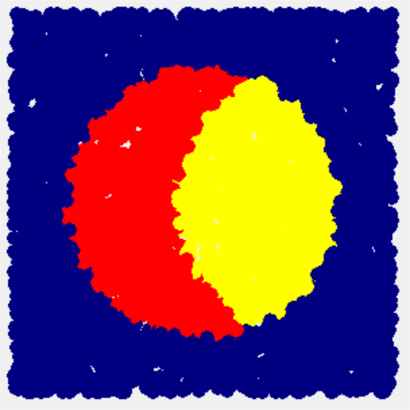
Funkciu kresli_bodku by sme mohli zadefinovať aj takto:
def kresli_bodku(x, y, farba='red', r=5):
canvas.create_oval(x - r, y - r, x + r, y + r, fill=farba, width=0)
V hlavičke funkcie sme k niektorým parametrom uviedli náhradnú hodnotu (nie je to priradenie). Už vieme, že to označuje, že ak tomuto formálnemu parametru nebude zodpovedať skutočný parameter, dosadí sa práve táto náhradná hodnota. Pritom musí platiť, že keď nejakému parametru v definícii funkcie určíte, že má náhradnú hodnotu, tak náhradnú hodnotu musíte zadať aj všetkým ďalším formálnym parametrom, ktoré sa nachádzajú v zozname parametrov za ním (ak sme zadefinovali náhradnú hodnotu pre parameter farba, musíme nejakú zadefinovať aj pre parameter r).
Teraz môžeme zapísať aj takéto volania tejto funkcie:
kresli_bodku(100, 200, 'blue', 3) # farba bude 'blue' a r bude 3
kresli_bodku(150, 250, 'blue') # farba bude 'blue' a r bude 5
kresli_bodku(200, 200) # farba bude 'red' a r bude 5
Tiež vieme, že Python umožňuje funkcie s parametrami volať tak, že skutočné parametre neurčujeme pozične (prvému skutočnému zodpovedá prvý formálny, druhému druhý, atď.) ale priamo pri volaní uvedieme meno parametra. Takto môžeme určiť hodnotu ľubovoľného parametra. Napríklad všetky tieto volania sú korektné:
kresli_bodku(10, 20, r=10)
kresli_bodku(farba='green', x=10, y=20)
kresli_bodku(r=7, farba='yellow', y=20, x=30)
Samozrejme aj pri takomto volaní môžeme vynechať len tie parametre, ktoré majú určenú náhradnú hodnotu, všetky ostatné parametre sa musia v nejakom poradí objaviť v zozname skutočných parametrov.
Kreslenie úsečiek a lomených čiar
Ďalším grafickým príkazom kreslíme lomené čiary, t.j. čiary, ktoré sa skladajú z nadväzujúcich úsečiek. Tvar príkazu je:
canvas.create_line(x1, y1, x2, y2, x3, y3, ...)
Parametrom je postupnosť súradníc, ktoré tvoria lomenú čiaru. Táto postupnosť musí obsahovať aspoň 2 body (aspoň 4 čísla) - vtedy sa nakreslí jedna úsečka. Napíšme program, ktorý nakreslí 100 úsečiek, ktoré majú prvý bod v (0, 0) a druhý je náhodný v ploche:
import tkinter
import random
canvas = tkinter.Canvas()
canvas.pack()
for i in range(100):
x = random.randint(20, 380)
y = random.randint(20, 260)
canvas.create_line(0, 0, x, y)
tkinter.mainloop()
po spustení:
{kind=link}
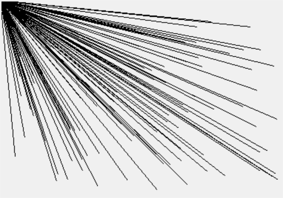
Doteraz sme používali takéto paralelné priradenie:
x, y = 100, 150
Do dvoch premenných x a y sa priradia nejaké dve hodnoty. Lenže Python ponúka ešte aj takýto variant priradenia:
a = 100, 150
V tomto prípade sa do premennej a priradí dvojica celých čísel. Takéto dvojice môžeme potom použiť ako parametre do grafických príkazov. Napríklad, zadefinujeme tri dvojice čísel, teda súradnice troch bodov a, b, c a potom nakreslíme trojuholník pomocou troch úsečiek:
import tkinter
canvas = tkinter.Canvas()
canvas.pack()
a = 100, 150
b = 280, 210
c = 170, 40
canvas.create_line(a, b)
canvas.create_line(b, c)
canvas.create_line(c, a)
tkinter.mainloop()
a vyzerá to takto:
{kind=link}
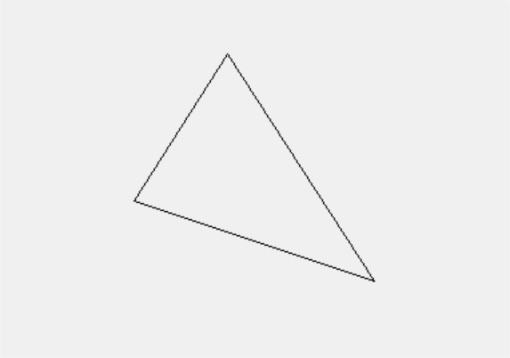
Tri volania create_line môže spojiť do jedného a ešte k tomu pridáme aj pomenovanie týchto vrcholov reťazcami 'A', 'B', 'C':
import tkinter
canvas = tkinter.Canvas()
canvas.pack()
a = 100, 150
b = 280, 210
c = 170, 40
canvas.create_line(a, b, c, a)
canvas.create_text(a, text='A')
canvas.create_text(b, text='B')
canvas.create_text(c, text='C')
tkinter.mainloop()
Všimnite si, že aj v grafických príkazoch create_text sme použili premenné, ktoré sú dvojicami celých čísel. Program nakreslí:
{kind=link}
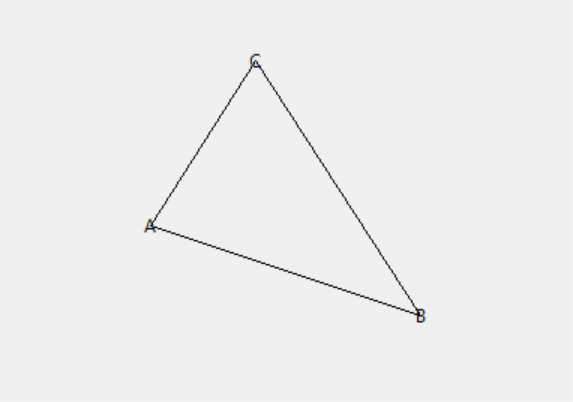
Ďalšia dvojica programov vygeneruje náhodný graf priebehu, napríklad teplôt v nejakom časovom úseku:
import tkinter
import random
canvas = tkinter.Canvas()
canvas.pack()
x, y = 10, 120
for i in range(37):
canvas.create_oval(x-3, y-3, x+3, y+3, fill='red')
x += 10
y += random.randint(-10, 10)
tkinter.mainloop()
Všimnite si, že prvý bod grafu je na súradniciach (10, 120). Každý ďalší je od predchádzajúceho posunutý vpravo o 10 a náhodne hore-dole o maximálne 10:
{kind=link}
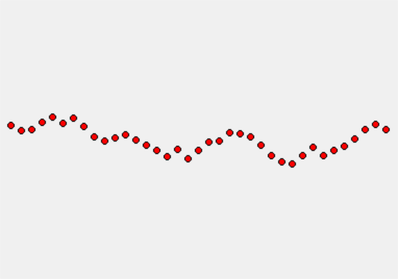
Druhá verzia programu tieto náhodne vygenerované body spája úsečkami:
import tkinter
import random
canvas = tkinter.Canvas()
canvas.pack()
x, y = 10, 120
for i in range(37):
x1 = x + 10
y1 = y + random.randint(-10, 10)
canvas.create_line(x, y, x1, y1, width=3)
x, y = x1, y1
teraz dostávame:
{kind=link}
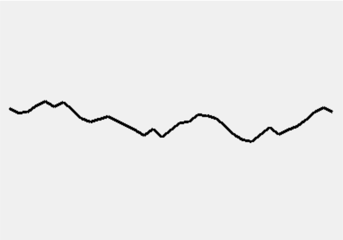
Body na kružnici¶
Už vieme kresliť kružnicu (x0, y0) s polomerom r, napríklad takto:
canvas.create_oval(x - r, y - r, x + r, y + r)
Lenže často riešime úlohy, v ktorých potrebujeme nie celú kružnicu, ale len niekoľko bodov na jej obvode. Využijeme goniometrické funkcie sin a cos. Potom každý bod na kružnici môžeme zapísať takýmto vzorcom:
x = x0 + r * cos(uhol)
y = y0 + r * sin(uhol)
kde uhol je zrejme nejaké číslo od 0 do 360 (nemusí byť celé) a (x0, y0) sú súradnice stredu kružnice. Zapíšme program, ktorý nakreslí lúče medzi stredom a bodmi na kružnici:
import tkinter
from math import sin, cos, radians
canvas = tkinter.Canvas()
canvas.pack()
x0, y0 = 150, 130
r = 110
for uhol in range(0, 360, 15):
x = x0 + r * cos(radians(uhol))
y = y0 + r * sin(radians(uhol))
canvas.create_line(x0, y0, x, y)
canvas.create_text(x, y, text=uhol)
tkinter.mainloop()
Program nakreslí 24 úsečiek, ktorých druhé konce sú rovnomerne rozmiestnené po obvode kružnice (po 15 stupňoch). Ku každej tejto úsečke sme pripísali aj jej prislúchajúci uhol:
{kind=link}
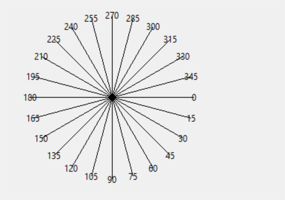
Ešte ukážeme využitie tejto idey na vypisovanie nejakého textu po jednotlivých znakoch tak, že ich rovnomerne rozložíme po obvode kružnice. V tomto prípade nebudeme kresliť úsečky, vypíšeme len znaky textu. Keďže text vieme rozobrať na znaky len pomocou for-cyklu (napríklad for znak in text), premennú uhol budeme musieť zväčšovať priraďovaním v tele cyklu:
import tkinter
from math import sin, cos, radians
canvas = tkinter.Canvas()
canvas.pack()
x0, y0 = 150, 130
r = 110
text = input('zadaj text: ')
n = len(text)
uhol, posun = 0, 360 / n
for znak in text:
x = x0 + r * cos(radians(uhol))
y = y0 + r * sin(radians(uhol))
canvas.create_text(x, y, text=znak)
uhol += posun
tkinter.mainloop()
Použili sme tu štandardnú funkciu len, ktorá pre zadaný reťazec vráti počet znakov (tzv. dĺžka znakového reťazca). Keď zadáme vstupný reťazec 'programovanie', dostaneme:
{kind=link}
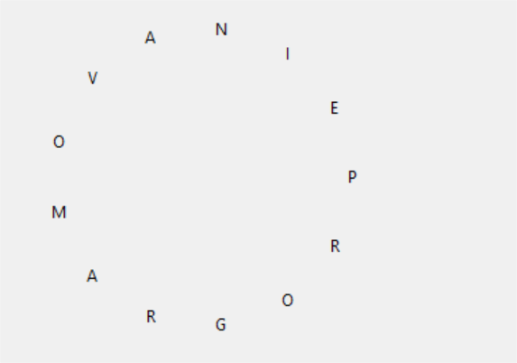
Tu by sa oplatilo vedieť vypísať písmená tohto textu trochu väčším fontom. Na to slúži pomenovaný parameter font. Keď riadok s výpisom textu nahradíme:
canvas.create_text(x, y, text=znak, font='arial 35')
Program teraz na výpis textu použije font 'Arial' a veľkosť znakov bude 35 (v rôznych operačných systémoch môže tento parameter dávať trochu rozdielne výsledky). Dostávame:
{kind=link}
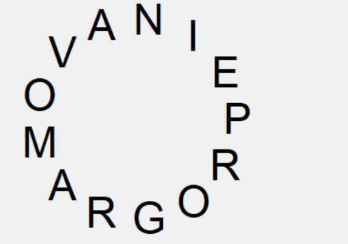
Do volania create_text môžeme pridať aj otočenie vypisovaného textu o nejaký uhol v stupňoch. Napríklad, tákáto zmena otočí každé písmeno textu tak, akoby sme sa na neho pozerali zo stredu:
canvas.create_text(x, y, text=znak, font='arial 35', angle=270-uhol)
dostaneme:
{kind=link}
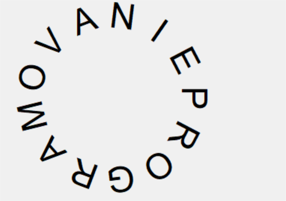
Zrejme počítaním bodov na kružnici a ich pospájaním úsečkami sa pre väčšie n vieme priblížiť k tvaru kružnice:
import tkinter
import random
from math import sin, cos, radians
def nahodna_farba():
return f'#{random.randrange(256**3):06x}'
canvas = tkinter.Canvas()
canvas.pack()
x0, y0 = 150, 130
r = 110
n = int(input('zadaj n: '))
x, y = x0 + r, y0
for i in range(1, n+1):
x1 = x0 + r * cos(radians(i * 360 / n))
y1 = y0 + r * sin(radians(i * 360 / n))
canvas.create_line(x, y, x1, y1, fill=nahodna_farba(), width=3)
x, y = x1, y1
tkinter.mainloop()
V skutočnosti sa nekreslí kružnica (umyselne sme každú úsečku nakreslili inou náhodnou farbou), ale pravidelný n-uholník. Napríklad:
{kind=link}
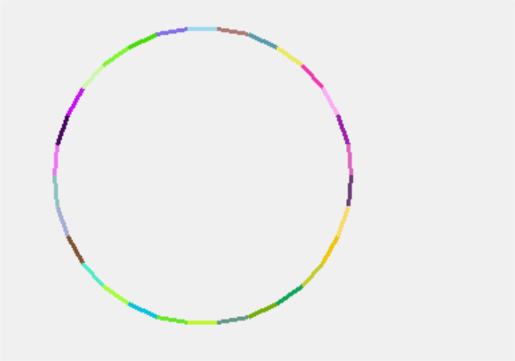
Zmenou hrúbky kreslených čiar:
canvas.create_line(x, y, x1, y1, fill=farba, width=30)
môžeme dostať:
{kind=link}
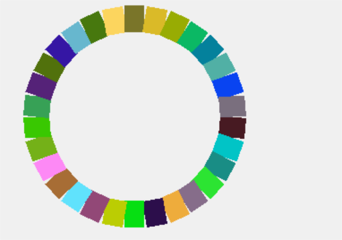
Kreslenie polygónov
Polygónom voláme oblasť grafickej plochy, ktorá je ohraničená zadanou lomenou čiarou (aspoň s tromi vrcholmi) a vyplní sa nejakou farbou. Body zadávame podobne ako pre create_line. Zrejme, keby sme zadali len dva body, bolo by to asi málo. Táto oblasť bude zafarbená čiernou farbou, prípadne ju môžeme zmeniť pomocou pomenovaného parametra fill, napríklad takto:
import tkinter
canvas = tkinter.Canvas()
canvas.pack()
a = (100, 50)
b = (30, 150)
c = (160, 120)
d = (180, 40)
canvas.create_polygon(a, b, c, d, fill='blue')
tkinter.mainloop()
Všimnite si, že sme dvojicu čísel pri priradení do premennej uzavreli do zátvoriek (napríklad a = (100, 50)), pričom predtým sme to písali bez zátvoriek ako a = 100, 50. Uvidíme neskôr, že Pythonu je v tomto prípade jedno, či tie zátvorky zapíšeme alebo nie.
Teraz to vyzerá takto:
{kind=link}
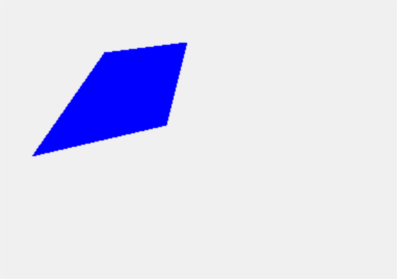
Dostali by sme rovnaký polygón, aj keby sme zapísali:
canvas.create_polygon(100, 50, 30, 150, 160, 120, 180, 40, fill='blue')
alebo:
canvas.create_polygon((100, 50), (30, 150), (160, 120), (180, 40), fill='blue')
Všimnite si, že nakreslená oblasť (polygón) nemá nakreslený obrys. Ak by sme ho chceli vidieť, zadali by sme aj pomenovaný parameter outline. Zapísali by sme napríklad canvas.create_polygon(..., outline='red') a polygón by dostal tenký červený obrys.
Nasledovný program nakreslí n rovnostranných trojuholníkov, pričom všetky majú rovnakú veľkosť strany a. Trojuholníky budú v ploche umiestnené náhodne, t.j. nielen ich poloha bude náhodná, ale aj ich otočenie. Okrem toho každý z nich zafarbíme náhodnou farbou. Pri kreslení náhodného trojuholníka použijeme takúto ideu:
zvolíme náhodné súradnice prvého vrcholu (pre istotu nie úplne blízko okrajov grafickej plochy)
zvolíme náhodný uhol otočenia trojuholníka
vypočítame druhý vrchol, ako bod na kružnici so stredom prvého vrcholu a s polomerom veľkosti strany trojuholníka
tretí vrchol trojuholníka leží na tej istej kružnici ako druhý vrchol, ale je o 60 stupňov otočený vľavo (alebo vpravo) oproti druhému vrcholu
Teraz máme istotu, že tieto tri vrcholy tvoria rovnostranný trojuholník so stranou a (je to rovnoramenný trojuholník, v ktorom je medzi ramenami uhol 60 stupňov).
Všimnite si, ako sme v tomto programe vyriešili importy zo všetkých troch modulov:
from tkinter import Canvas, mainloop
from random import randint, randrange
from math import sin, cos, radians
canvas = Canvas()
canvas.pack()
a = 30
n = 100
for i in range(n):
x1 = randint(a, 380 - a)
y1 = randint(a, 260 - a)
uhol = randint(0, 360)
x2 = x1 + a * cos(radians(uhol))
y2 = y1 + a * sin(radians(uhol))
uhol = uhol - 60
x3 = x1 + a * cos(radians(uhol))
y3 = y1 + a * sin(radians(uhol))
farba = f'#{randrange(256**3):06x}'
canvas.create_polygon(x1, y1, x2, y2, x3, y3, fill=farba)
mainloop()
Po spustení dostávame:
{kind=link}
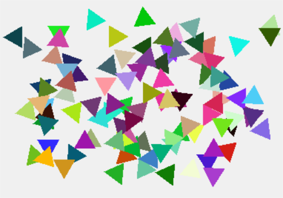
Grafický objekt obrázok
Aby sme do plochy mohli nakresliť nejaký obrázok, musíme najprv vytvoriť obrázkový objekt (pomocou tkinter.PhotoImage() prečítať obrázok zo súboru) a až tento poslať ako parameter do príkazu na kreslenie obrázkov canvas.create_image().
Obrázkový objekt vytvoríme špeciálnym príkazom:
premenna = tkinter.PhotoImage(file='meno suboru')
v ktorom meno suboru je súbor s obrázkom vo formáte png alebo gif. Takýto obrázkový objekt môžeme potom vykresliť do grafickej plochy ľubovoľný počet-krát.
Samotná funkcia canvas.create_image() na vykreslenie obrázka má tri parametre: prvé dva sú súradnice stredu vykresľovaného obrázka a ďalší pomenovaný parameter určuje obrázkový objekt. Príkaz má tvar:
canvas.create_image(x, y, image=premenna)
V nasledovnom príklade sme si zvolili obrázok: pyton.png
{kind=link}
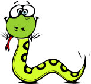
a vykreslili sme ho niekoľkokrát vedľa seba:
import tkinter
canvas = tkinter.Canvas()
canvas.pack()
obr = tkinter.PhotoImage(file='pyton.png')
for x in range(80, 380, 120):
canvas.create_image(x, 150, image=obr)
tkinter.mainloop()
Po spustení dostávame:
{kind=link}
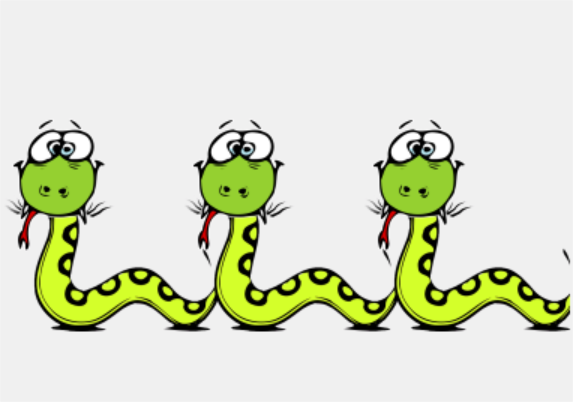
Parametre grafickej plochy
Pri vytváraní grafickej plochy (pomocou tkinter.Canvas()) môžeme nastaviť veľkosť plochy ale aj farbu pozadia grafickej plochy. Môžeme uviesť tieto parametre:
bg= nastavuje farbu pozadia (z anglického „background“)width= nastavuje šírku grafickej plochyheight= výšku plochy
Napríklad:
canvas = tkinter.Canvas(bg='white', width=400, height=200)
Vytvorí bielu grafickú plochu, ktorá má šírku 400 a výšku 200.
Zhrnutie parametrov grafických príkazov¶
Zmeny nakreslených útvarov¶
Všetky útvary, ktoré kreslíme do grafickej plochy si systém pamätá tak, že ich dokáže dodatočne meniť (napríklad zmení farbu výplne), posúvať po ploche, ale aj mazať. Všetky útvary sú v ploche vykresľované presne v tom poradí, ako sme zadávali jednotlivé grafické príkazy: skôr nakreslené útvary sú pod neskôr nakreslenými a môžu ich prekrývať.
Každý grafický príkaz (napríklad canvas.create_line()) je v skutočnosti funkciou, ktorá vracia celé číslo - identifikátor nakresleného útvaru. Toto číslo nám umožní neskoršie modifikovanie, resp. jeho zmazanie.
Okrem tohto identifikačného čísla (každý objekt má jedinečné číslo), môžeme grafickým objektom prideľovať štítky (pomenovaný parameter tag=) a potom môžeme vo všetkých nasledovných príkazov namiesto identifikátora používať tento pridelený štítok. Pritom rôzne objekty môžu mať rovnaké štítky a tým môžeme jedným modifikačným príkazom zmeniť naraz viac objektov.
Zrušenie nakresleného útvaru¶
Na zrušenie ľubovoľných grafických objektov z grafickej plochy slúži funkcia:
canvas.delete(označenie)
kde parameter označenie je jedno z
číselný identifikátor
pridelený štítok (
tag)reťazec
'all'označuje všetky útvaru v ploche
Napríklad:
id1 = canvas.create_line(10, 20, 30, 40)
id2 = canvas.create_oval(10, 20, 30, 40)
canvas.create_text(100, 100, text='ahoj', tag='t')
canvas.create_rectangle(80, 90, 120, 110, fill='gray', tag='t')
...
canvas.delete(id1)
canvas.delete('t')
Zmaže prvý grafický objekt (s identifikačným číslom id1), t.j. úsečku, pričom druhý objekt kružnica ostáva bez zmeny. Druhý príkaz canvas.delete('t') zmaže oba objekty: text aj obdĺžnik, keďže sme pridelili štítok ‚t‘.
Posúvanie útvarov¶
Objekty môžeme posúvať určením buď identifikátora útvaru alebo jeho štítku (vtedy ich môže byť aj viac). Ostatné útvary sa pri tom nehýbu. Tvar funkcie je:
canvas.move(označenie, dx, dy)
kde
označenieje buď identifikátor alebo štítok grafických útvarov (bude fungovať aj reťazec'all')dxadyoznačujú číselné hodnoty zmeny súradníc útvaru, t.j. posun v smere osi x a v smere osi y
Napríklad:
id1 = canvas.create_line(10, 20, 30, 40)
id2 = canvas.create_oval(10, 20, 30, 40)
canvas.create_text(100, 100, text='ahoj', tag='t')
canvas.create_rectangle(80, 90, 120, 110, fill='gray', tag='t')
...
canvas.move(id1, -5, 10)
canvas.move('t', 5, -10)
posunie prvý nakreslený útvar, teda úsečku, druhý útvar (kružnicu) pri tom nehýbe, zároveň s tým posunie opačným smerom naraz obdĺžnik s textom.
Zmena parametrov útvaru¶
Táto funkcia umožňuje meniť ľubovoľné pomenované parametre už nakresleným útvarom. Jeho tvar je:
canvas.itemconfig(označenie, parametre)
kde
označenieje buď identifikátor alebo štítok grafických útvarovparametresú pomenované parametre v rovnakom formáte, aký bol pri ich vytváraní
Napríklad:
i = canvas.create_rectangle(80, 90, 120, 110, fill='gray')
...
canvas.itemconfig(i, fill='red')
zmení farbu výplne na červenú obdĺžnika s daným identifikačným číslom i.
Zmena súradníc¶
Okrem posúvania útvarov im môžeme zmeniť aj ich kompletnú postupnosť súradníc. Napríklad, pre canvas.create_line() alebo canvas.create_polygon() môžeme zmeniť aj počet bodov útvaru. Tvar tejto funkcie je:
canvas.coords(označenie, postupnosť)
kde
označenieje buď identifikátor alebo štítok grafických útvarovpostupnosťje ľubovoľná postupnosť súradníc, ktorá je vhodná pre daný útvar - táto postupnosť musí obsahovať párny počet čísel (celých alebo desatinných)
Napríklad:
i1 = canvas.create_line(10, 20, 30, 40)
canvas.coords(i1, 30, 40, 50, 60, 70, 90)
Cvičenie¶
Poznámka
riešenia úloh ulož do jedného súboru a odovzdaj na testovací server https://vektor.fmph.uniba.sk/
testovací server grafické ulohy nebude testovať, preto ich odovzdaj čo najviac aspoň 8
prvé tri riadky súboru s riešením musia obsahovať:
# 3. cvicenie # student: Janko Hrasko # datum: 30.9.2025
zrejme ako študenta uvedieš svoje meno.
používaj len konštrukcie z doterajších prednášok (žiadne podmienené príkazy a zoznamy)
Napíš program s funkciou
stvorce(x, y), ktorá najprv nakreslí dva štvorce vedľa seba (prvý má ľavý horný(x, y), veľkosť100, druhý je o10odsunutý). Potom postupne:zafarbí ich tak, že prvý bude červený a druhý modrý (parameter
fill='...')do stredu prvého vypíšeš text
'červený'a druhého'modrý'písmo oboch textov zväčšíš (napríklad parameter
font='arial 20') a zafarbíš na žlto (parameterfill='...')
Ak bude volanie
stvorce(50, 50), mal by si dostať takýto výstup: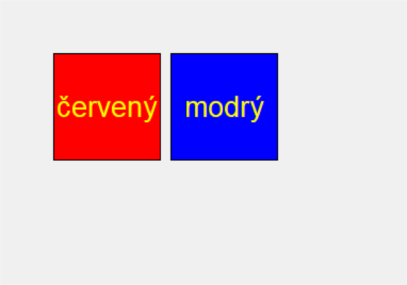
Vyskúšaj spustiť aj pre iné hodnoty, napríklad
stvorce(120, 10).
{kind=link}
Na tmavomodré pozadie canvasu (pri volaní
tkinter.Canvas()nastavbgna'navy') funkciahviezdy(n)nakreslí na náhodné pozícienžltých hviezdičiek (create_text) znak'*'- skús ich kresliť rôznymi veľkosťami fontu (napr. veľkosť fontu nech je náhodne číslo od 10 do 20). Napríklad, prehviezdy(200)môžeš dostať niečo podobné: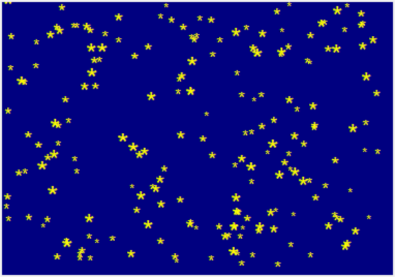
{kind=link}
Napíš program s funkciou
dva_stvorce(x, y, a1, a2), ktorá najprv nakreslí dva štvorce: prvý štvorec má ľavý horný roh(x, y)a veľkosť stranya1. Druhý štvorec má rovnaký stred ale veľkosťa2(menšiu oda1). Potom postupne:zafarbí ich na niektorý odtieň červenej a bledomodrej (napríklad
'indian red'a'light blue')k vrcholom vonkajšieho štvorca pripíše pomenovania A, B, C, D
k pravej zvislej hrane väčšieho štvorca pripíše veľkosť tohto štvorca
k spodnej hrane menšieho štvorca pripíše veľkosť tohto menšieho štvorca
Malo by to fungovať pre rôzne hodnoty parametrov. Napríklad pre volanie:
dva_stvorce(50, 50, 180, 100)
by si mohol dostať nejaký takýto výstup:
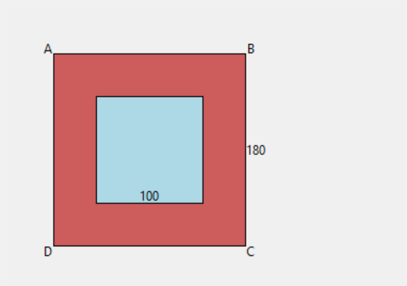
Vyskúšaj spustiť aj pre iné hodnoty parametrov, napríklad:
dva_stvorce(140, 20, 200, 190)
{kind=link}
Napíš program s funkciou
vlajky((), ktorá nakreslí vlajky týchto štátov: Nemecko, Taliansko, Francúzsko a Ukraina. Všetky nech majú rozmery135x90. Volanievlajky((), nakreslí (všimni si, že medzi farebnými pruhmi nie je čierna čiara):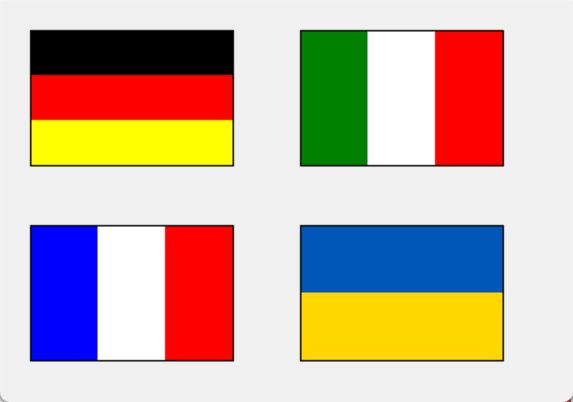
{kind=link}
Napíš program s funkciou
pyramida(x, y), ktorá nakreslí pyramídu z kvádrov (obdĺžnikov) veľkosti: 200x50, 150x50, 100x50 a 50x50. Najväčší z nich má stred dolnej hrany(x, y), napríklad(180, 250). Všetky zafarbi štyrmi rôznymi odtieňmi zelenej. Na kreslenie použi jeden for-cyklus, v ktorom premenná cyklufarba, bude nadobúdať 4 rôzne reťazce (mená farieb) a v cykle sa budú meniť premennéya momentálnasirkakvádra. Prepyramida(180, 250)by si mal dostať podobný výstup: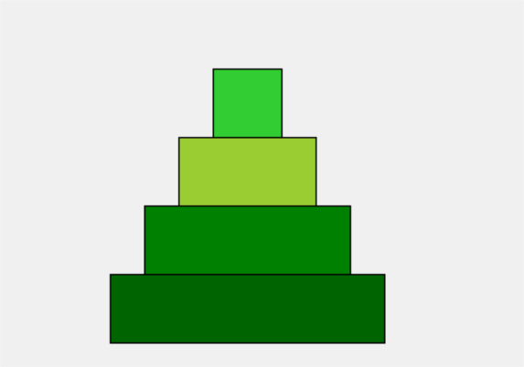
{kind=link}
Napíš program s funkciou
cikcak(n, x, y, d), ktorá nakreslí cikcakovú čiaru zloženú znúsečiek. V parametrochx, ymá nastavené súradnice najľavejšieho bodu prvej úsečky a vdje posunutie prexajykaždého ďalšieho bodu čiary. Zrejme kysa to raz pripočíta a raz odpočíta. Napríklad pre volaniecikcak(16, 10, 100, 20)by si mal dostať: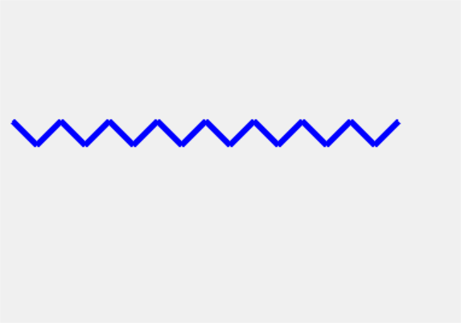
{kind=link}
Napíš program s funkciou
olympijske(x, y, r, dx, dy), ktorá nakreslí olympijské kruhy. V parametrochx, y, r, dx, dymá zadané: súradnice stredu horného najľavejšieho kruhu (x,y), polomer kruhov (r) a vzdialenosť medzi kruhmi v jednom rade (dx) a vzdialenosť medzi radmi (dy). Hrúbka čiar kružníc nech je15. Pre volanieolympijske(70, 100, 50, 120, 60)by si mal dostať takýto výstup: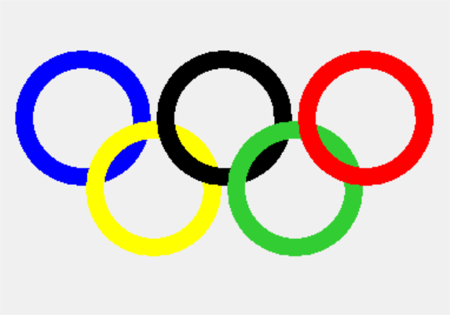
{kind=link}
Napíš program s funkciou
bankovky(n), ktorá pod seba vygenerujenbankoviek s náhodnými hodnotami. Na generovanie náhodnej hodnoty použi zápis:hodnota = random.choice((1, 2, 5, 10, 20, 50))
pomocou ktorého sa náhodne vyberie jedno číslo zo zadanej postupnosti. Program na záver spočíta výslednú sumu. Veľkosť obdĺžnikov nech je 50x20. Napríklad volanie
bankovky(10)môžeš dostať takýto výstup: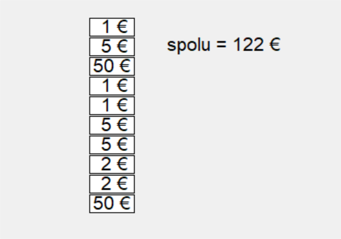
{kind=link}
Program s funkciou
mince(n)nakreslínnáhodných mincí. Mincami sú farebné kruhy s polomerom20, v ktorých sú veľké ('arial 30') náhodné číslice od1do9. Napríklad pre volaniemince(30)môžeš dostať niečo podobné: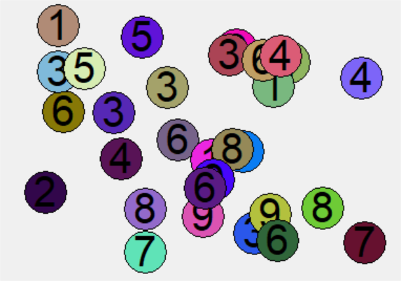
{kind=link}
Program s funkciou
vypis(text)postupne každé písmeno tohto textu zapíše ('arial 26') do jedného farebného štvorca veľkosti 30x30. Tieto štvorce sú umiestnené tesne vedľa seba. Farby štvorcov aj písmen zvoľ náhodne. Napríklad pre volanievypis('LUBIM PYTHON'))môžeš dostať niečo podobné: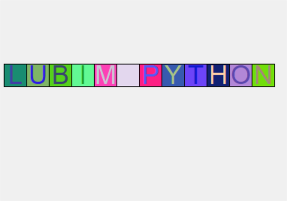
{kind=link}
Napíš program s funkciou
co_najvacsie(n), ktorá medzi šírku grafickej plochy10a380vykreslínčo najväčších rovnako veľkých štvorcov (s medzerou5). Pre danénteda najprv vypočítaš veľkosť štvorcov tak, aby boli čo najväčšie a zmestili sa do danej šírky. Štvorce vyplň náhodnými farbami. Napríklad preco_najvacsie(7)môžeš dostať takýto výstup: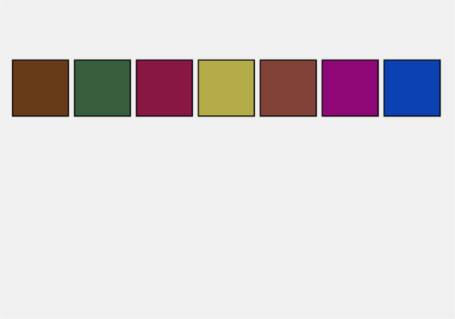
{kind=link}
Napíš program s funkciou
rovnostranny(x, y, a=280), ktorá pomocoucanvas.create_polygonnakreslí rovnostranný trojuholník. V parametrochx, y, amá nastavené súradnice ľavého dolného vrcholu a veľkosť strany trojuholníka. Pre volanierovnostranny(50, 250)by si mal dostať takýto výstup:Zrejme využiješ príkaz
create_polygon(), do ktorého zadáš 3 vrcholy trojuholníka. Spomeň si, ako vypočítaš výšku rovnostranného trojuholníka.
{kind=link}
Napíš program s funkciou
domceky(n), ktorá nakreslínnáhodných farebných domčekov. Každý domček sa skladá z rovnostranného trojuholníka (použi riešenie z predchádzajúcej úlohy) a štvorca. Polohu domčeka, veľkosť strany jeho štvorca a trojuholníka zvoľ náhodne (veľkosť bude náhodné číslo z<10, 50>). Tiež ich farby zvoľ náhodne. Predomceky(20)by si mohol dostať takýto výstup:
{kind=link}
Napíš program s funkciou
ceska_vlajka(sirka, vyska), ktorá nakresli vlajku Českej republiky (vlajku bývalého Československa). V parametrochsirka, vyskamá zadané rozmery vlajky. Modrý klin ide do polovice šírky vlajky. Pre volanieceska_vlajka(300, 200)by si mal dostať takýto výstup:Vyskúšaj program spustiť aj pre iné hodnoty šírky a výšky.
{kind=link}
Napíš program s funkciou
sachovnica(pr, ps, vel, farba1, farba2), ktorá nakreslí farebnú šachovnicu. V parametrochpr, ps, vel, farba1, farba2dostáva počet stĺpcov, počet riadkov, veľkosť štvorčeka a dve farby, ktoré sa majú na šachovnici striedať. Medzi nakreslenými štvorčekmi je ešte medzera veľkosti3. Pre volaniesachovnica(6, 10, 30, 'maroon', 'gold')môžeš dostať takýto výstup:
{kind=link}
Program s funkciou
prechod()nakreslí 25 obdĺžnikov veľkosti 15x250, ktoré sú uložené tesne vedľa seba. Tieto obdĺžniky postupne menia farby od červenej k modrej: čím je väčšiexobdĺžnika tým menej červenej a viac modrej (využi funkciurgbz prednášky). Mohlo by to vyzerať takto:
{kind=link}
Program s funkciou
n_uholnik(n, a, x, y)pre danéna dĺžku stranyanakreslí pravidelnýn-uholník so stranoua. Využi body na kružnici so stredomxaya polomeromr, ktorý budeš ale musieť vypočítať. Napríklad pren_uholnik(7, 100, 180, 130)nakreslíš:
{kind=link}
Program s funkciou
uhlopriecky(n, x, y, r)pre danénnakreslí pravidelnýn-uholník, ale dokreslí do neho aj všetky uhlopriečky. Pre volanieuhlopriecky(7, 180, 130, 125)dostaneš:
{kind=link}
Program s funkciou
kruhy(n)nakreslíndotýkajúcich sa kruhov, ktorých stredy ležia na obvode kružnice. Tieto kruhy zafarbi náhodnými farbami. Zvoľ si vhodné súradnice stredu myslenej kružnice a jej veľkosť.
{kind=link}
Napíš program s funkciou
slovenska_vlajka(x, y, sir, vys, modra='#0b4ea2', cervena='#ee1c25'), ktorá nakreslí vlajku Slovenska. V súbore sk.png je obrázok štítu so znakom:ktorý umiestniš (jeho stred) posunutý o ´´100´´ a
108od ľavého horného okraja vlajky. V parametrochx, y, sir, vysje momentálna pozícia ľavého horného rohu, šírka a výška vlajky, modrá a červená farba. Pre volanieslovenska_vlajka(30, 30, 325, 216)by si mal dostať takýto výstup:Premenná, v ktorej budete mať uložený obrázok (prečítaný pomocou
tkinter.PhotoImage), nemôže byť lokálnou premennou funkcieslovenska_vlajka(tomuto budeme rozumieť až neskôr). Preto do tejto premennej načítajte obrázok ešte pred volaním funkcieslovenska_vlajka, napríklad za príkazomcanvas.pack().
{kind=link}
{kind=link}